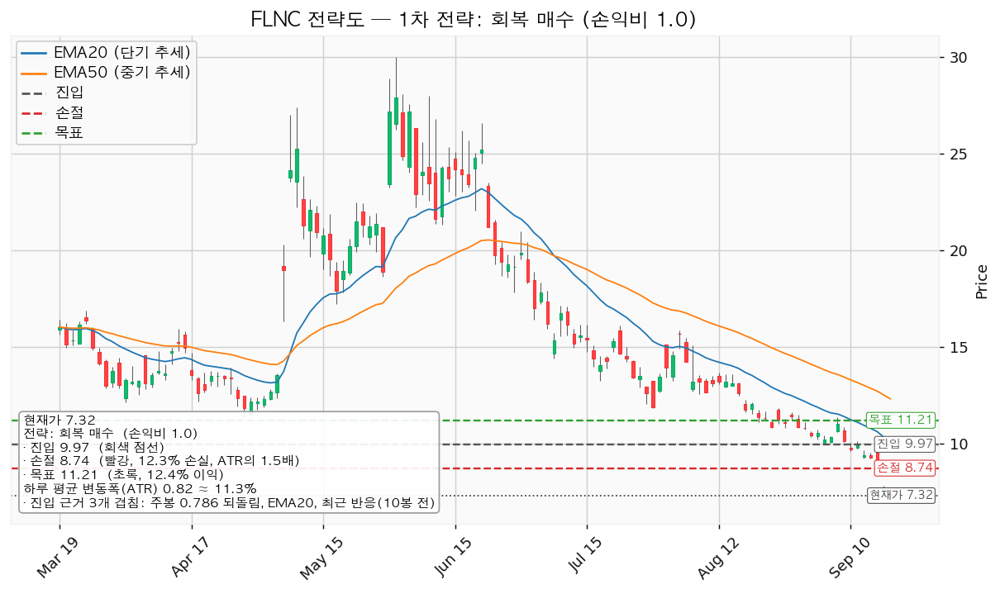
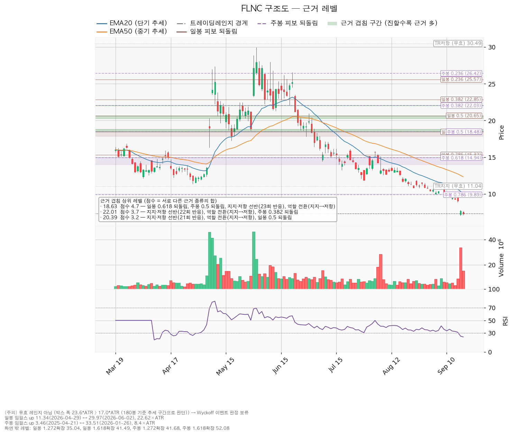
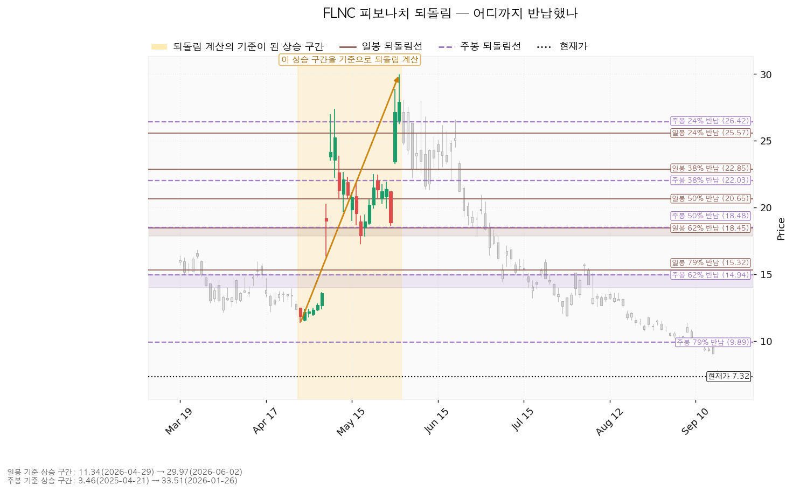
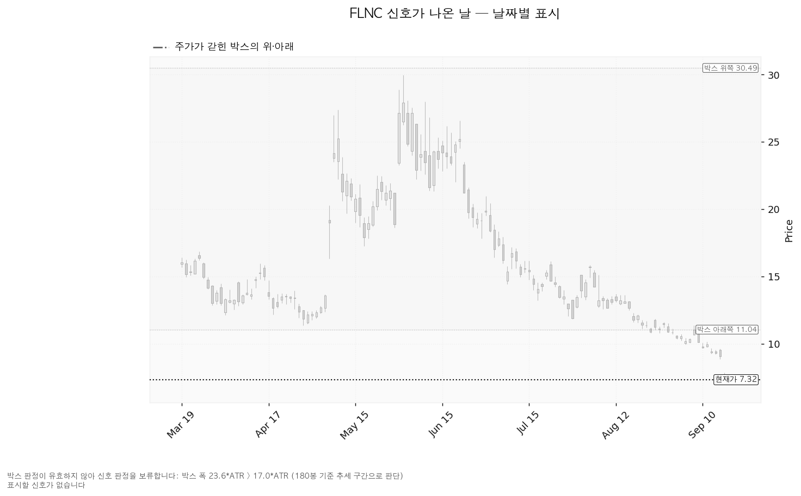

플루언스 에너지(FLNC)는 전력망·발전소에 들어가는 대형 배터리 에너지저장장치(ESS)와 이를 운영·입찰하는 소프트웨어, 유지보수 서비스를 공급하는 미국 기업입니다. AES와 지멘스가 함께 세웠습니다.
기준 가격은 9월 18일 종가 7.32달러, 하루 평균 변동폭(ATR)은 0.82달러입니다. 보유분은 7월 1일 체결된 270주이고 평단은 27.4219달러입니다.
| 구분 | 가격 | 판정 방식 | 현재가 대비 | 상태 |
|---|---|---|---|---|
| 회복선(구조 회복) | 12.45달러 | 일봉 종가로 회복한 뒤 되돌림에서 지지되는지 | +70.0% (하루 평균 변동폭의 6.22배) | 회복 대기 |
| 집행 손절 | 8.74달러 | 도달 시 즉시 청산 — 9.97달러 회복 후 새로 진입한 경우에만 작동합니다. 이번 리포트는 그 진입을 패스로 판정했으므로 지금은 무의미합니다 | +19.4% (1.72배, 현재가 위) | 미진입 시 무의미 |
| 관망 종료 기준 | 7.00달러 | 일봉 종가가 아래로 마감 / 또는 2026-11-24 실적 | -4.4% (0.39배) | 유효 — 9월 17일 저가 7.01달러가 이 자리 |
| 확인선 | 18.63달러 | 일봉 종가 돌파 후 되돌림에서 지지 확인 | +154.5% (13.73배) | 미돌파 |
| 폐기선(구조) | 9.97달러 | 이탈 후 3거래일 내 종가 회복 실패(또는 그 전에 9.15달러 아래 종가 마감) + 반등에서 저항으로 확인 | +36.2% (3.22배, 현재가 위) | 이탈 상태 — 2단계 경고 확정 |
폐기선 9.97달러는 현재가에서 하루 평균 변동폭의 3.22배 위에 있습니다. 아래쪽 무효화 기준으로는 이미 제 역할을 끝냈고, 지금은 같은 가격이 셋업 진입 기준선으로만 남아 있습니다. 미진입자가 실제로 매일 볼 선은 관망 종료 기준 7.00달러입니다.
회복선 12.45달러는 구조가 되살아났다고 볼 수 있는 자리이고, 셋업이 걸린 가격은 그보다 낮은 9.97달러입니다. 두 가격이 다른 이유는 셋업이 "구조 회복"이 아니라 "직전에 반응한 저항선 하나를 종가로 되찾는 것"만 조건으로 걸기 때문입니다. 확인선 18.63달러는 현재가에서 13.73배 위라 실행 기준이 아니라 상승 전환이 완성됐다고 인정할 먼 지점으로만 씁니다. 박스 상단 30.49달러는 그보다 더 위의 맥락입니다. 유효한 박스로 판정되지 않았으므로 회복선과 확인선은 박스 경계가 아니라 참고용 구조선입니다.
① 직전 트리거의 성적표 — 아래쪽 기준이 하루 만에 전부 무너졌습니다.
9월 17일 주가는 전일 종가 9.05달러에서 시가 7.23달러로 열렸습니다(-20.1%). 거래량은 3,376만 주로 평소의 4.59배였고, 저가 7.01달러·종가 7.66달러였습니다. 9월 18일은 종가 7.32달러, 저가 7.11달러입니다.
| 직전 리포트가 건 조건 | 판정 | 근거 |
|---|---|---|
| 보유 270주 즉시 전량 정리 | 미집행 | 체결 장부에 매도 기록이 없습니다(270주 / 평단 27.4219달러 / 2026-07-01 체결 1건). 지연 비용은 직전 리포트 시점 9.05달러와 현재가 7.32달러의 차이인 -467달러입니다 |
| 폐기선 9.95달러 종가 이탈 | 충족 | 9월 17일 종가 7.66달러, 9월 18일 종가 7.32달러 |
| 관망 종료 기준 9.20달러 종가 이탈 | 충족 | 9월 17일 종가 7.66달러 |
| 집행 손절 8.82달러 도달 | 충족 — 단, 체결 기회 없이 건너뛰어졌습니다 | 9월 17일 시가 7.23달러가 이미 8.82달러 아래였습니다. 8.82달러에 걸어 둔 주문이 있었더라도 그 가격에서는 채워지지 않았습니다 |
| 셋업 진입 트리거 9.95달러 종가 회복 | 미충족 | 이 기간 최고 종가 7.66달러 |
| 회복선 12.65달러 종가 회복 | 미충족 | 미도달 |
| 확인선 18.51달러 종가 돌파 | 미충족 | 미도달 |
| 목표 11.21달러 터치 | 미충족 | 이 기간 최고가 7.84달러 |
② 좌표의 이동 — 손익비가 1.12에서 1.00으로 내려왔습니다.
| 항목 | 직전(09-17) | 이번(09-19) | 왜 움직였나 |
|---|---|---|---|
| 현재가 | 9.05달러 | 7.32달러 | -19.1% |
| 회복선 | 12.65달러 | 12.45달러 | 구성은 같고(EMA50 + 스윙저점 + 최근 반응) EMA50이 12.73 → 12.32달러로 내려와 묶음 중심이 낮아졌습니다 |
| 폐기선 | 9.95달러 | 9.97달러 | 겹침대 구성이 바뀌었습니다. 직전은 주봉 0.786 되돌림 + 라운드피겨 10.00달러 + 반응이었고, 가격이 내려가면서 라운드피겨 사다리에서 10.00달러가 빠지고 EMA20이 10.63 → 10.06달러로 내려와 그 자리에 들어왔습니다 |
| 관망 종료 기준 | 9.20달러 | 7.00달러 | 직전 기준은 9월 17일 종가 7.66달러로 이탈했습니다. 현재가 아래에 남은 겹침은 라운드피겨 7.00·6.50·6.00달러뿐이고 그중 가장 위가 7.00달러입니다. 9월 17일 저가 7.01달러가 같은 자리입니다 |
| 집행 손절 | 8.82달러 | 8.74달러 | 진입선 아래 하루 평균 변동폭의 1.5배라는 계산은 같고, 변동폭이 0.75 → 0.82달러로 커져 손절이 더 내려갔습니다 |
| 확인선 | 18.51달러 | 18.63달러 | 겹침 구성은 같고(일봉 0.618 + 주봉 0.5 + 선반 반응 + 역할 전환) 밴드 중심만 이동했습니다 |
| 대표 셋업 진입 / 목표 | 9.95 / 11.21달러 | 9.97 / 11.21달러 | 목표 겹침대 11.04~11.37달러는 그대로입니다 |
| 손익비 | 1:1.12 | 1:1.00 | 진입과 목표는 거의 그대로인데 변동폭이 커져 손절 폭이 1.13 → 1.23달러로 넓어졌습니다 |
| ATR / RSI | 0.75달러 / 31.1 | 0.82달러 / 23.7 | 변동폭이 커지고 RSI는 과매도선(30) 아래로 내려갔습니다 |
손익비가 내려간 경위를 그대로 적습니다. 직전 1.12는 목표 겹침대가 위로 재구성되면서 얻은 값이었고, 이번 1.00은 그 목표가 유지된 채 변동폭만 커져 손절 폭이 넓어진 결과입니다. 두 번 모두 종목의 상태가 바뀌어서 나온 숫자가 아닙니다.
③ 판단의 변화 — 보유분은 직전과 같고, 신규 진입은 대기에서 패스로 바꿉니다.
보유 270주 정리는 직전과 같은 결론입니다. 직전 리포트가 확정 지시로 냈는데 집행되지 않은 채 넘어왔으므로 다시 적습니다. 신규 진입은 직전에 조건부 대기(손익비 1.12)였는데 이번에는 패스로 바꿉니다. 근거는 두 가지입니다 — 손익비가 1.00으로 내려와 기대값이 0이고, 내년 추정 EPS가 30일 전 +0.30달러에서 -0.27달러로 적자 전환했습니다. 직전 리포트의 다른 수치나 전제에서 정정할 오류는 위 박스에 적은 갭 관련 누락 하나입니다.
| 항목 | 값 |
|---|---|
| 현재가 | 7.32달러 (2026-09-18 종가) |
| EMA20 / EMA50(20일·50일 지수이동평균) | 10.06달러 / 12.32달러 — 둘 다 현재가 위 |
| RSI(14) (14일 상대강도, 50이 중립) | 23.7 — 과매도선(30) 아래 |
| ATR(Average True Range, 하루 평균 변동폭) | 0.82달러 (주가의 11.25%) |
| 국면 | 하락·중립 — 신규 롱 관망 |
| 횡보 박스 | 유효한 박스가 아닙니다 |
횡보 박스로 볼 수 없어 Wyckoff 판정은 보류합니다. 40·90·180거래일 세 창을 모두 시험했지만 어느 것도 박스 조건을 채우지 못했습니다. 그중 가격이 가장 잘 지킨 180거래일 창(약 9개월치)이 선택됐고, 조회한 전체 일봉은 753개입니다.
| 시험한 창 | 가격이 안에 머문 비율 | 방향성 | 폭(하루 변동폭 배수) | 판정 |
|---|---|---|---|---|
| 40거래일 | 37.5% | 1.658 | 2.84배 | 박스 아님 |
| 90거래일 | 76.7% | 0.691 | 20.30배 | 박스 아님 |
| 180거래일 | 88.3% | 0.362 | 23.61배 | 박스 아님 |
180거래일 창은 가격이 88.3% 안에 머물렀지만 폭이 하루 변동폭의 23.61배로 지나치게 넓습니다(기준은 17배). 폭이 이만큼 벌어지면 옆으로 누운 박스가 아니라 아래로 흐른 추세 구간으로 읽습니다. 40거래일 창은 반대로 가격이 구간 안에 머문 비율이 37.5%뿐이고 방향성 지표가 1.658로 커서, 짧은 창에서도 옆걸음이 아니라 한 방향으로 흐른 구간입니다. 그래서 이번 리포트에도 매집·분산을 가르는 Wyckoff 국면 판정이 없습니다. 국면 후보는 하락 진행이며 이동평균 배열만 반영한 값입니다.
이 구간으로 아래에서 올라왔습니다. 직전 구간은 3.93~24.79달러의 추세·확장 구간이었고 위로 뚫고 올라온 뒤 지금 자리로 되밀렸습니다. 위에서 내려온 것이 아니라 아래에서 올라와 되돌린 모양이므로 재축적일 수도 분산일 수도 있으며, 판단 근거는 안쪽에서 일어난 일입니다.
안쪽 관측치 — 중립이며, 지지 테스트 거래량이 증가로 돌아섰습니다.
| 지지 테스트 | 저가 | 그날 거래량(평소 대비) |
|---|---|---|
| 2026-03-03 | 13.81달러 | 1.18배 |
| 2026-04-02 | 12.12달러 | 1.02배 |
| 2026-04-29 | 11.34달러 | 1.08배 |
| 2026-07-17 | 13.23달러 | 0.98배 |
| 2026-07-29 | 11.84달러 | 0.86배 |
| 2026-09-17 | 7.01달러 | 4.59배 |
지지 테스트 거래량 추세는 직전 리포트의 혼조에서 증가로 바뀌었고, 저점은 여전히 절상이 아니라 절하입니다(13.23 → 11.84 → 7.01달러). 상승봉과 하락봉의 거래량비는 1.15로 미세하게 매수 쪽이지만 저점 절하와 4.59배 거래량을 상쇄할 숫자가 아닙니다. 종합 판정은 중립이며, 그 사유는 지지 테스트마다 매도 거래량이 늘고 저점이 절하되고 있다는 것입니다. 직전 리포트가 잡은 9월 16일 저가 8.85달러(1.36배)가 하루 만에 7.01달러(4.59배)로 다시 낮아졌습니다.
이번 분석에서 산출된 셋업은 회복 확인 매수 한 개입니다. 국면이 하락·중립이라 되돌림 매수·돌파 매수는 나오지 않았고, 지지 확인 매수도 나오지 않았습니다 — 유효한 박스가 없고 안쪽 판정이 매집 우위가 아닌 중립이며, 현재가 바로 아래에 여러 번 지켜진 지지 가격대도 없기 때문입니다. 셋업이 하나뿐이라 대표 셋업 선택의 트레이드오프는 없습니다.
대표 셋업 선정 사유: *"손익비 1.0 × 구조 증명도(회복 확인형) × 근거 겹침 3.0점으로 선정. 저항을 종가로 회복한 뒤에만 진입한다 — 진입가는 불리하나 구조가 먼저 증명된다."*
| 항목 | 값 |
|---|---|
| 셋업 | 회복 확인 매수 — 회복 확인형(구조 증명도 1.0, 가장 높은 등급) |
| 엣지의 종류 | 모멘텀 — "저항을 종가로 되찾으면 그 방향이 이어진다"는 전제 |
| 성격 | 자주 틀리고 소수가 크게 맞는 유형입니다. 승률을 기대하는 셋업이 아닙니다(이 유형의 일반적 성격이며, 이 엔진에서 측정한 값이 아닙니다) |
| 진입 | 9.97달러 — 일봉 종가로 회복한 뒤 (현재가에서 +36.27%, 하루 평균 변동폭의 3.22배 위) |
| 진입 근거 겹침 | 3.0점 / 9.89~10.06달러 — 근거 3종: 주봉 0.786 되돌림, EMA20, 10거래일 전 실제 반응 |
| 손절 | 8.74달러 — 손절 폭 1.23달러 = 하루 평균 변동폭의 1.50배(진입가 대비 -12.39%) |
| 손절 근거 | 진입 기준선에서 하루 평균 변동폭의 1.5배 아래. 진입가 아래에 근거가 겹치는 구간이 없어 겹침 구간 하단이 아니라 변동폭 기준으로 잡았습니다 |
| 목표 | 11.21달러 (진입 대비 +12.44%) |
| 목표 근거 겹침 | 2.9점 / 11.04~11.37달러 — 구간 지지, 스윙고점(9월 8일 11.37달러), 8거래일 전 반응 |
| 손익비 | 1:1.00 (손절 폭이 하루 평균 변동폭의 1.50배) |
| 구조적 손절 기준 손익비 | 이 손절이 이미 구조적 손절(1.5배 변동폭)이므로 같은 1:1.00입니다. 손절을 조여서 만든 숫자가 아닙니다 |
| 청산 규칙 | 중간 목표가 없어 분할 없이 단일 목표입니다. 목표 11.21달러에서 전량(비중 100%), 트레일링은 걸지 않습니다 |
| 분할 청산 | 엔진이 낸 목표는 11.21달러 하나뿐이고 중간 익절 구간이 없습니다. 본전 손절로 옮길 지점이 없으므로 전 구간 손익비는 단일 청산과 같은 1:1.00이고, 절반 익절 후의 하한 손익비는 계산되지 않습니다 |
| 비중 | 계좌의 8.1% (1회 매매 손실 한도 1% 기준, 한 종목 상한 13% 이내) |
판정: 패스입니다. 손익비 1:1.00은 손실 한 번과 이익 한 번의 크기가 같다는 뜻이고, 수수료·슬리피지를 빼기 전 기대값이 0입니다. 이 셋업의 엣지는 모멘텀이며 위 표에 적은 대로 자주 틀리는 유형이므로, 손익비가 1에 붙어 있으면 성립하지 않습니다. 여기에 더해 내년 추정 EPS가 30일 만에 흑자에서 적자로 돌아섰습니다(아래 컨센서스 절). 진입 조건 9.97달러가 채워지면 그 시점의 좌표로 다시 계산하되, 지금의 숫자로는 조건이 채워져도 싣지 않습니다.
진입에서 목표까지가 1.24달러로 하루 평균 변동폭의 1.51배이며 2배에 못 미치므로 트레일링이나 다단 청산을 권하지 않습니다(2배라는 기준은 관행이지 정설이 아닙니다). 11.21달러 위로 확정되는 구간은 이 포지션의 연장이 아니라 새 셋업으로 다시 잡습니다.
진입 기준선 9.97달러가 현재가보다 3.22배 위에 있는 회복 확인형이므로, 이번 리포트에는 현재가를 따라 사는 선택지 자체가 없습니다.

보유분은 위 셋업과 별개입니다. 직전 리포트가 즉시 정리로 확정했고 집행되지 않았으므로, 이번 리포트도 같은 지시를 냅니다.
| 항목 | 값 |
|---|---|
| 보유 수량 / 평단 | 270주 / 27.4219달러 (2026-07-01 체결, 실현손익 없음) |
| 취득가 합계 | 7,404달러 |
| 현재 평가액 | 1,976달러 |
| 평가손익 | -5,428달러 (-73.3%) |
| 조건 | 판정 | 집행 |
|---|---|---|
| 9월 15일 종가 9.95달러 미만 | 충족(9.30달러) | 270주 전량 정리 |
| 일봉 종가 9.16달러 아래 마감 | 충족(9월 16일 9.05달러) | 270주 전량 정리 |
| 폐기선 9.95달러 종가 이탈 | 충족(9월 17일 7.66달러) | 270주 전량 정리 |
현재가 아래에 근거가 겹치는 지지 구간이 하나도 없다는 점은 직전 리포트와 같고, 그 아래로는 라운드피겨 7.00·6.50·6.00달러만 남았습니다. 평단 27.4219달러는 어느 경로로도 회복되지 않으며, 평단이 앞으로의 가격에 영향을 주지 않으므로 판단은 현재가 7.32달러에서 위아래로 무엇이 있는지만 보고 내렸습니다.
이 지시가 감수하는 비용을 함께 적습니다. RSI 23.7은 과매도선 아래이고 9월 17일은 평소 4.59배 거래량이 나온 날이라, 여기서 정리하면 단기 반등 직전에 파는 결과가 될 수 있습니다. 그 가능성을 알고도 정리를 먼저 두는 이유는 아래에 받칠 가격이 없고, 내년 추정이익이 적자로 돌아서면서 목표 11.21달러를 떠받치던 근거가 함께 약해졌기 때문입니다.
| 단계 | 조건 | 의미 | 행동 |
|---|---|---|---|
| ① 관찰 | 일봉 종가가 9.97달러 아래로 마감 | 구조 이탈이 시작된 것이며, 되돌아 올라오면 속임수 하락일 수 있어 아직 무효가 아닙니다 | 신규 진입만 중단. 집행 손절은 그대로 둡니다 |
| ② 경고 | 이탈 후 3거래일 안에 9.97달러를 종가로 회복하지 못함, 또는 그 전에 일봉 종가가 9.15달러 아래로 마감(하루 평균 변동폭의 1배만큼 더 밀림) — 둘 중 먼저 오는 쪽 | 저항 회복 실패 가능성이 우세해집니다 | 잔여 비중 축소. 이 리포트는 이 시점에 보유 270주를 정리합니다 |
| ③ 무효 | 반등이 9.97달러에서 막히고 그 아래로 되밀림(지지가 저항으로 전환) | 셋업 폐기 — 구조 해석이 틀린 것으로 확정 | 포지션 정리 후 새 구조가 만들어질 때까지 관망 |
현재 위치는 ② 경고 확정입니다. 9월 10일 종가 9.69달러로 ①에 들어섰고, 9월 11일·14일·15일 세 거래일 모두 9.97달러를 종가로 되찾지 못해 3거래일 조건이 채워졌습니다. 9월 17일 종가 7.66달러는 9.15달러 아래이므로 두 번째 조건도 채워졌습니다. 아직 ③은 아닙니다 — ③은 반등이 나와서 9.97달러에 막힐 때 확정되며, 가격이 그 아래 3.22배 거리에 있어 당분간 판정할 기회 자체가 오지 않습니다. 집행 손절 8.74달러는 이 3단계 판정과 무관하게 별도로 작동하며, 장중 일시 이탈은 어느 단계에도 해당하지 않습니다.
① 상승 전환
② 횡보 지속
③ 시나리오 폐기
점수는 서로 다른 근거의 종류가 몇 개 겹쳤는지를 가중합한 값이며, 같은 종류가 여러 개 붙어도 한 번만 셉니다.
| 가격대 | 겹침 점수 | 근거 | 현재가 대비 |
|---|---|---|---|
| 18.45~18.79달러 | 4.7 | 일봉 0.618 되돌림 + 주봉 0.5 되돌림 + 반복 반응 구간(23회) + 역할 전환(지지→저항) | +154.5% (확인선) |
| 22.01~22.03달러 | 3.7 | 반복 반응 구간(22회) + 역할 전환(지지→저항) + 주봉 0.382 되돌림 | +200.6% |
| 20.26~20.65달러 | 3.2 | 반복 반응 구간(21회) + 역할 전환(지지→저항) + 일봉 0.5 되돌림 | +178.5% |
| 9.89~10.06달러 | 3.0 | 주봉 0.786 되돌림 + EMA20 + 최근 반응(10거래일 전) | +36.2% (진입·폐기선) |
| 11.04~11.37달러 | 2.9 | 구간 지지 + 스윙고점 + 최근 반응(8거래일 전) | +53.1% (목표 11.21달러) |
| 12.32~12.57달러 | 2.7 | EMA50 + 스윙저점 + 최근 반응(29거래일 전) | +70.0% (회복선) |
| 14.94~15.32달러 | 2.5 | 주봉 0.618 되돌림 + 일봉 0.786 되돌림 | +104.1% |
| 11.84달러 | 1.7 | 스윙저점 + 최근 반응(17거래일 전) | +61.7% |
| 9.00달러 | 0.6 | 라운드피겨 | +22.9% |
| 8.50달러 | 0.6 | 라운드피겨 | +16.1% |
| 8.00달러 | 0.6 | 라운드피겨 | +9.3% |
| 7.00달러 | 0.6 | 라운드피겨 | -4.4% (관망 종료 기준) |
| 6.50달러 | 0.6 | 라운드피겨 | -11.2% |
| 6.00달러 | 0.6 | 라운드피겨 | -18.0% |
현재가 아래로는 근거가 겹치는 구간이 하나도 없습니다. 7.00·6.50·6.00달러는 모두 라운드피겨 하나뿐인 0.6점짜리이고, 지지 선반·되돌림선·이동평균 중 어느 것도 이 아래에 남아 있지 않습니다. 직전 리포트에서 이 자리를 지키던 8.50·8.00달러는 이제 현재가 위에 있습니다. 아래로 밀릴 때 가격이 반응할 만한 자리가 사이에 없다는 뜻이며, 집행 손절 8.74달러를 겹침 구간 하단이 아니라 변동폭 기준으로 잡은 것도 같은 이유입니다.

일봉 되돌림은 11.34달러(2026-04-29) → 29.97달러(2026-06-02) 상승 구간 기준으로 계산됐습니다(구간 폭이 하루 변동폭의 22.62배로 충분히 큽니다).
| 되돌림 | 가격 | 현재 상태 |
|---|---|---|
| 0.236 (24% 반납) | 25.57달러 | 이미 아래로 통과 |
| 0.382 (38% 반납) | 22.85달러 | 이미 아래로 통과 |
| 0.5 (50% 반납) | 20.65달러 | 이미 아래로 통과 |
| 0.618 (62% 반납) | 18.45달러 | 이미 아래로 통과 — 확인선과 겹침 |
| 0.786 (79% 반납) | 15.32달러 | 이미 아래로 통과 |
일봉 기준으로는 되돌림선이 모두 무너졌습니다. 현재가 7.32달러는 상승이 시작된 자리(11.34달러)보다 아래이므로 4월 말부터 6월 초까지의 상승분을 100% 넘게 반납했습니다. 일봉 되돌림은 지금 지지 근거가 되지 못하고 위쪽 저항 위치를 알려주는 용도로만 남았습니다.
주봉 되돌림은 3.46달러(2025-04-21) → 33.51달러(2026-01-26) 상승 구간 기준입니다. 79% 반납선이 9.89달러이고 현재가 7.32달러는 그 아래입니다. 주봉 되돌림선도 9.89달러가 마지막이며, 그 아래로는 남아 있는 되돌림선이 없습니다. 다음 참조점은 상승이 시작된 3.46달러입니다. 셋업 진입선 9.97달러가 이 마지막 되돌림선을 되찾는 자리와 겹치는 것도 같은 이유입니다.

이번 조회에서 산출된 신호일이 없습니다. 앞서 적은 대로 유효한 박스로 판정되지 않아 Wyckoff 이벤트(속임수 하락·상단 속임수·강세 신호·약세 신호)가 계산되지 않았습니다. 신호가 없는 것이 아니라 판정을 보류한 것입니다. 9월 17일의 4.59배 거래량도 이 절에서는 신호로 이름이 붙지 않으며, 지지 테스트 기록으로만 남습니다. 아래 차트에도 표시할 신호일이 없습니다.

| 항목 | 값 |
|---|---|
| 애널리스트 | 19명 · 투자의견 hold(보유) |
| 목표주가 | 평균 11.42달러 / 최저 3.00달러 / 최고 23.00달러 |
| 현재가의 위치 | 최저 목표보다 +144.0% 위, 평균 목표보다 -35.9% 아래, 최고 목표보다 -68.2% 아래 |
| 후행 PER | 계산되지 않습니다 — 후행 EPS가 -0.60달러로 적자이기 때문입니다 |
| 선행 PER | 41.2배 — 다만 아래 (a)에 적은 이유로 이 값은 그대로 쓸 수 없습니다 |
| 추정이익(EPS) | 올해 -0.89달러(범위 -1.55~-0.28) / 내년 -0.27달러(범위 -0.93~+0.29) |
| 추정치 방향(최근 90일) | 올해 적자가 -0.14달러에서 -0.89달러로 확대(+551.3%) / 내년은 +0.20달러에서 -0.27달러로 적자 전환(-232.1%) |
| 다음 실적 | 2026-11-24 |
(a) 배수는 둘 다 봅니다 — 그런데 이번에는 둘 다 쓸 수 없습니다. 후행 PER은 회사가 적자여서 존재하지 않습니다(후행 EPS -0.60달러). 남은 선행 PER 41.2배는 선행 EPS 0.178달러를 분모로 쓴 값인데, 같은 조회의 애널리스트 내년 추정 EPS 평균은 -0.27달러(적자)입니다. 두 숫자가 서로 어긋나므로 선행 41.2배를 밸류에이션 판단의 근거로 쓰지 않습니다. 적자 추정치가 맞다면 내년 기준으로도 PER은 계산되지 않습니다. 이 불일치를 숨기지 않고 그대로 적습니다. 직전 조회에서 선행 70.7배로 나왔던 값이 41.2배로 내려온 것도 이익 전망이 좋아져서가 아니라 분모로 쓰인 선행 EPS가 0.178달러로 바뀌고 가격이 9.05 → 7.32달러로 빠졌기 때문입니다.
(b) 목표주가는 분포로 봅니다. 19명의 목표는 3.00달러에서 23.00달러까지 벌어져 있습니다. 현재가 7.32달러는 최저 목표 3.00달러보다 +144.0% 위여서 전원의 목표 아래로 떨어진 상태는 아니지만, 분포의 아래쪽에 자리합니다. 직전 조회 대비 평균은 15.11 → 11.42달러(-24.4%), 최저는 6.00 → 3.00달러(-50.0%), 최고는 24.00 → 23.00달러(-4.2%)로 이동했습니다. 분포의 아래쪽이 위쪽보다 훨씬 크게 내려왔고, 투자의견은 보유(hold)로 직전과 같습니다.
(c) 하락의 정체 — 이익 추정치가 가격보다 더 크게 내려갔습니다. 최근 90일 동안 올해 추정 EPS는 -0.14달러에서 -0.89달러로 적자가 깊어졌고(+551.3%), 내년 추정 EPS는 +0.20달러에서 -0.27달러로 흑자 전망 자체가 사라졌습니다(-232.1%). 30일 전과 비교하면 내년 추정치는 +0.30달러에서 -0.27달러로, 이 변화의 대부분이 최근 한 달에 몰려 있습니다. 가격만 내리고 이익 전망은 유지된 경우라면 배수 수축이므로 되돌림 매수의 근거가 되지만, 여기서는 추정치가 가격보다 먼저, 더 크게 내려갔습니다. 사업 전망이 낮아진 것으로 읽으며, 9월 17일의 갭과 저점 절하가 이어지는 가격 움직임이 같은 방향을 가리킵니다.
(d) 현금흐름 — 영업 단계에서 현금이 나가고 있습니다. 2025년 9월 30일 결산 기준으로 영업활동 현금흐름은 -1억 4,554만 달러, 잉여현금흐름은 -1억 7,534만 달러입니다. 설비투자는 2,980만 달러로 직전 1,898만 달러 대비 +57.0% 늘었습니다. 세 수치는 서로 맞아떨어집니다. 설비투자가 앞서서 생긴 적자가 아니라 영업 그 자체에서 현금이 유출되는 유형이며, 이쪽이 더 무겁습니다. 결산 기준일이 2025년 9월 30일로 거의 1년 전 값이므로 최근 분기의 상황은 이 숫자에 들어 있지 않고, 11월 24일 실적이 그 사이를 메우는 첫 확인점입니다.
(e) 상승 여력의 분해 — 이익으로 설명되는 몫이 없습니다. 평균 목표 11.42달러는 현재가 대비 +56.0%입니다. 그런데 내년 추정 EPS가 -0.27달러로 적자여서, 그 목표가 함의하는 이익 배수를 계산할 수 없습니다. 선행 EPS 0.178달러를 대신 쓰면 평균 목표의 내재 배수는 64.3배이고 현재가가 매기는 배수는 41.2배이므로, 이 경우에도 +56.0%는 전부 배수 확장에 기댑니다. 어느 쪽 분모를 쓰든 목표까지의 거리가 이익 증가로 설명되지 않는다는 결론은 같습니다.
주도주 여부 — 아닙니다. 이익 추정치가 90일간 올해·내년 모두 크게 하향됐고 내년은 적자로 돌아섰으며, 투자의견은 보유이고, 가격은 EMA20·EMA50 아래에서 저점을 낮추고 있습니다. 실적 층위와 가격 층위가 같은 방향으로 부정적이라 서로를 상쇄해 주지 않습니다. 시계는 구분합니다 — 컨센서스는 12개월, 이번 셋업과 보유분 처리는 수 주입니다. 이번 리포트의 답은 진입·손절·목표로 냅니다.
| 날짜 | 이벤트 | 볼 것 |
|---|---|---|
| 2026-11-24 | 분기 실적 발표 | ① 올해 EPS 추정 -0.89달러(범위 -1.55~-0.28) 대비 실제치 ② 발표 후 내년 추정치 -0.27달러가 흑자로 되돌아오는지, 더 내려가는지 ③ 영업활동 현금흐름이 -1억 4,554만 달러에서 개선되는지(결산 기준일 2025-09-30 이후 처음 메워지는 구간) ④ 설비투자 증가(+57.0%)가 매출로 돌아오는 속도 |
날짜가 정해진 확인 이벤트는 이 하나뿐입니다. 직전 리포트의 확인 캘린더와 같은 날짜이며, 그 사이의 판단은 핵심 가격 표로 합니다.
폐기선 9.97달러는 현재가에서 하루 평균 변동폭의 3.22배 위에 있습니다. 아래쪽 무효화 기준으로는 이미 판정이 끝났고, 지금은 셋업 진입 기준선으로만 남아 있습니다. 가격 쪽에서 매일 판정할 선은 관망 종료 기준 7.00달러 하나이며, 여기에 더해 가격이 아닌 조건을 겁니다.